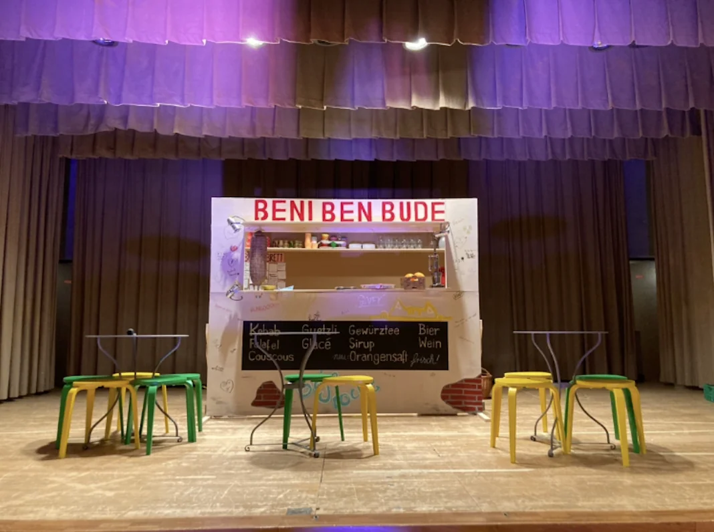

Theaterstücke / Stückentwicklung & Inszenierung
Beni Bens Bude

Das Projekt
Ein Weihnachtsprojekt mit der Evangelischen Kirchgemeinde Kreuzlingen.
Theaterstücke
Das Herzstück ist die gemeinsame Stückentwicklung. Als Ausgangspunkt nutzen wir – angepasst an Projektumfang und Spielende wie Schulklassen, Spielclubs und Theatergruppen – aktuelle Themen, Kurzgeschichten, Theaterstücke oder Zeitungsartikel.
In einem geleiteten theatralen Suchprozess treten die Spieler:innen in einen kreativen Dialog mit dem Material. Wir erproben vielfältige Erzählformen, rütteln an persönlichen und gesellschaftlichen Dimensionen, lassen neue Welten entstehen – und bringen das Ergebnis gemeinsam auf die Bühne.
Ein Projekt anfragen ↗Nächstes ProjektBroccoli und Zuckerschock